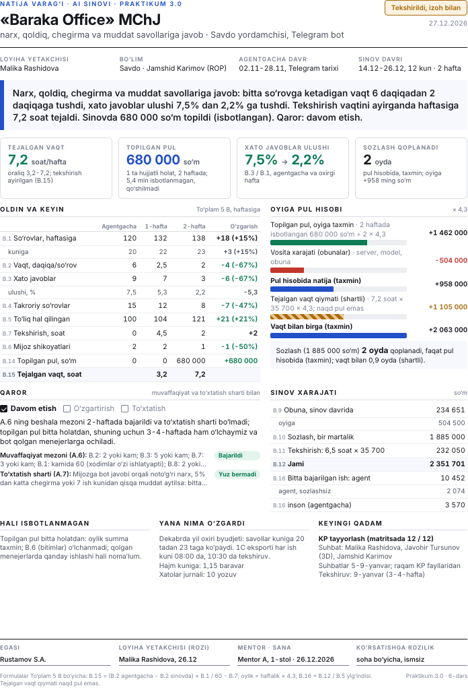
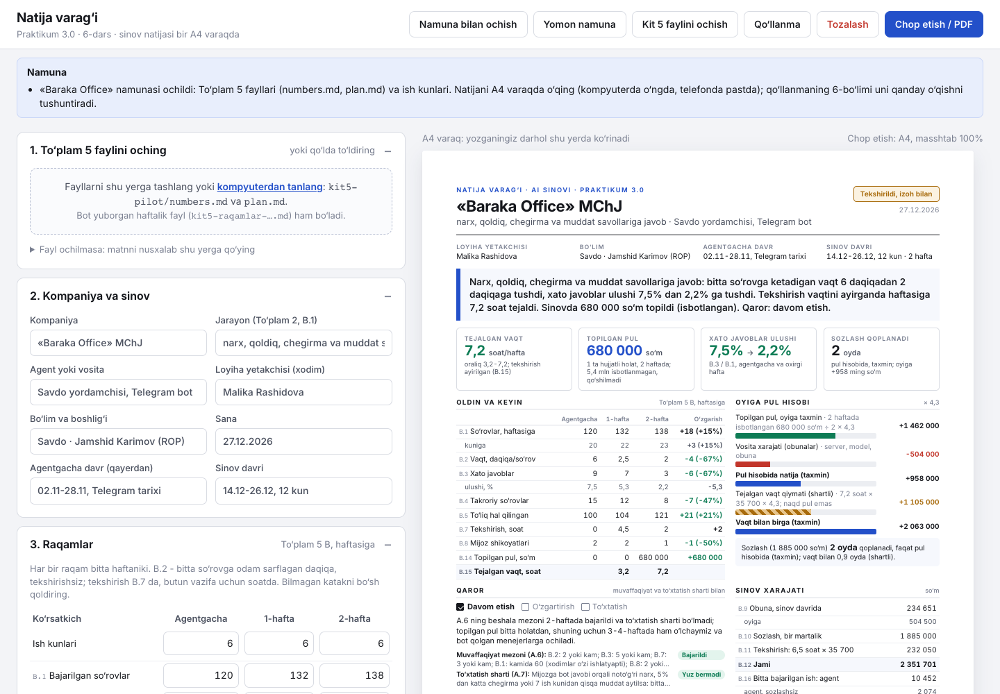
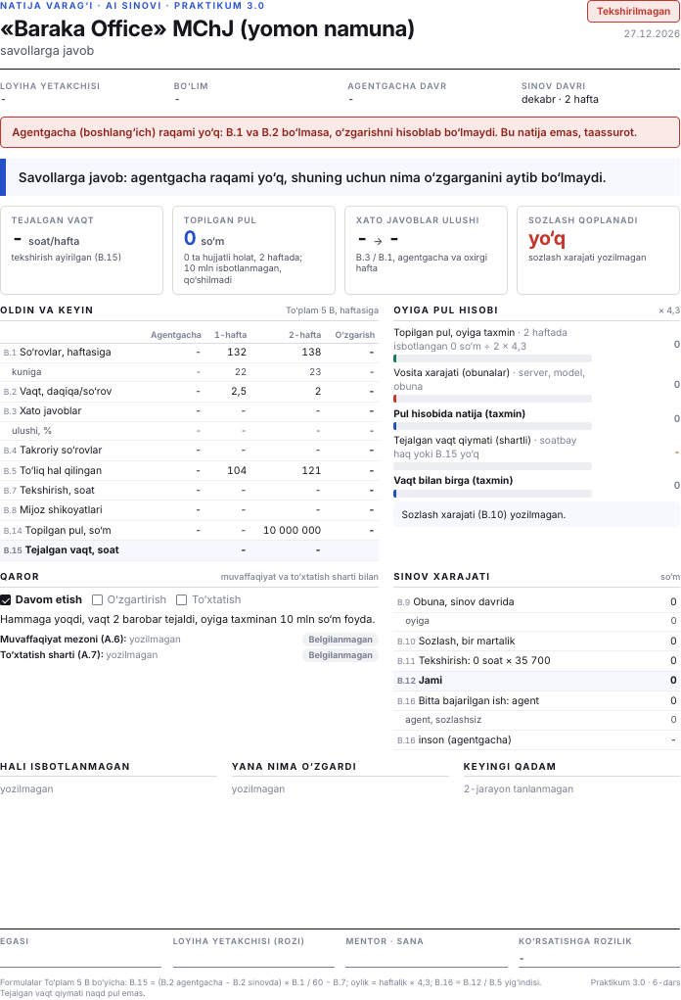
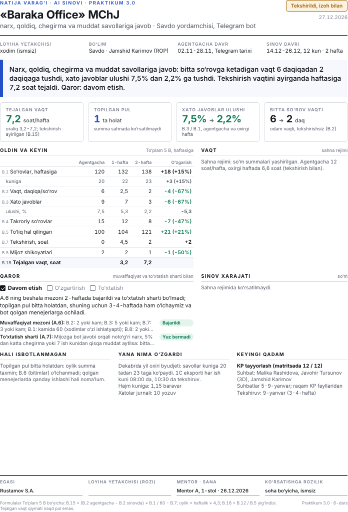

A4 varaq: yozganingiz darhol shu yerda ko‘rinadiChop etish: A4, masshtab 100%
Natija varag‘i - sinovingiz natijasi bitta A4 varaqda. Uni hamkoringizga, bo‘lim boshlig‘iga yoki o‘zingizga bir yildan keyin ko‘rsatasiz. Varaqda beshta narsa bor: agentgacha va keyin raqamlar, tejalgan soat va topilgan pul, xato javoblar ulushi, vositaning narxi va qoplanish muddati, qaror va keyingi jarayon. Sahifa internetsiz ishlaydi: index.html ni brauzerda (Chrome, Edge, Safari) oching. Kiritgan narsangiz shu kompyuterning brauzerida saqlanadi; boshqa hech qayerga yuborilmaydi.
| Nima | Qayerdan | Kim beradi |
|---|---|---|
kit5-pilot/numbers.md: agentgacha, 1-hafta, 2-hafta ustunlari, B.7 va topilgan pul tafsiloti | Kompaniya papkangiz; /kit5 hafta 2 va /kit5 yakun to‘ldiradi | Siz, Claude Code bilan |
kit5-pilot/plan.md: A.6 muvaffaqiyat mezoni, A.7 to‘xtatish sharti | Kompaniya papkangiz (4-darsda yozilgan) | Siz va bo‘lim boshlig‘i |
| Ish kunlari: har hafta nechta kun ishladingiz | Kalendar, bayramlar | Siz |
| Soatbay haq: ishni bajaradiganlarning oklad / oylik ish soati | Ish haqi varag‘i | Buxgalter |
| Oylik xarajat: server, model (OpenRouter), Claude obunasi | Provayder hisobi, OpenRouter paneli, Claude kvitansiyasi | Siz |
| Sozlash xarajati (B.10): kim necha soat sarfladi, kimga necha so‘m to‘landi | O‘z hisobingiz, IT xodim | Siz |
| Topilgan pulning har bir holati va hujjati | CRM bitim kartasi, hisob-faktura, buxgalter tasdig‘i | Siz va buxgalter |
Mentor bu raqamlarni darsdan oldingi uch kunda tekshiradi. Darsda faqat yakuniy ustun va qaror qoladi.
numbers.md va plan.md ni birga tanlang. Fayllarni ramkaga sudrab tashlasangiz ham bo‘ladi. Fayl ochilmasa, uning matnini nusxalab «Fayl ochilmasa» qutisiga qo‘ying.| Maydon | Oddiy so‘z bilan | Qayerdan |
|---|---|---|
| B.1 Bajarilgan so‘rovlar | Haftasiga nechta ish keldi va bajarildi (hammasi, faqat agent qilgani emas) | Bot jurnali, Telegram eksporti |
| B.2 O‘rtacha vaqt, daqiqa | Bitta ishga odam sarflagan daqiqa, tekshirishsiz | 10 ta holatni soat bilan o‘lchash |
| B.3 Xato javoblar | Noto‘g‘ri javoblar soni; xatolar jurnalidagi qatorlar soniga teng | Xatolar jurnali (B.13) |
| B.4 Takroriy so‘rovlar | Bir mijoz bir narsani qayta so‘ragani | Telegram eksporti |
| B.5 To‘liq hal qilingan | Qo‘shimcha savolsiz yopilgan ishlar | Bot jurnali |
| B.6 Bitimlar | Shu jarayondan chiqqan bitim yoki buyurtma; bog‘lab bo‘lmasa bo‘sh qoldiring | CRM |
| B.7 Tekshirish vaqti, soat | Agent ishini tekshirishga butun vazifa bo‘yicha haftasiga necha soat ketdi | Tekshiruvchining o‘zi aytadi |
| B.8 Mijoz shikoyatlari | Shu jarayon bo‘yicha shikoyatlar | CRM, chat |
| B.14 Topilgan pul | Oldi olingan xato, yo‘qolmagan so‘rov, tezroq tushgan pul; har biri hujjat bilan | Bitim kartasi, buxgalter |
| Ish kunlari | Shu hafta nechta kun ishlandi | Kalendar |
| Soatbay haq | Oklad / oyiga ish soati (o‘z jadvalingiz bo‘yicha: haftasiga 40 soat bo‘lsa 173,3; Baraka’da 46 soat, taxminan 200); tekshiruvchi boshqa odam bo‘lsa, uning haqi alohida maydonda | Buxgalter: ijtimoiy soliqni ham qo‘shish kerakmi, undan so‘rang |
| Oylik xarajat | Vosita ishlab turishi uchun har oy to‘lanadigan pul | Hisob-fakturalar |
| Sozlash (B.10) | Bir marta sarflangan: sizning va IT xodimning soatlari, tashqi to‘lov | O‘z hisobingiz |
Varaq o‘zi hisoblaydigan qatorlar, To‘plam 5 dagi formulalar bilan:
Varaqda muvaffaqiyat mezoni va to‘xtatish sharti ikki qatorga qisqartiriladi; to‘liq matni plan.md da.
| Xato | Nega yomon | To‘g‘risi |
|---|---|---|
| Agentgacha ustuni bo‘sh | O‘zgarishni hisoblab bo‘lmaydi: bu taassurot | 2-darsdan keyingi baseline.md ni oching; yo‘q bo‘lsa, «natija yo‘q, sababi» deb halol yozing |
| Kunlik va haftalik daqiqalar aralashgan | Natija 5-6 baravar xato chiqadi | Hamma qator haftasiga; B.2 bitta ishga daqiqa |
| B.7 bo‘sh | Tejalgan vaqt bo‘rttiriladi | Tekshiruvchidan haftalik soatni so‘rang |
| B.2 ga tekshirish vaqti ham qo‘shilgan va B.7 ham yozilgan | Tekshirish ikki marta ayiriladi | B.2 tekshirishsiz, tekshirish faqat B.7 da |
| Topilgan pul manbasiz | Mentor o‘chiradi, hamkor ishonmaydi | Har holat: sana, hujjat, kim tasdiqladi |
| Tushum topilgan pul deb yozilgan | Tushum foyda emas | Faqat oldi olingan yo‘qotish yoki aniq qo‘shimcha foyda |
| Tejalgan soat «oyiga X so‘m foyda» deb yozilgan | Maosh kamaymagan bo‘lsa, bu pul emas | Varaq ikki qatorni alohida ko‘rsatadi: pul va shartli vaqt |
| Claude obunasi yozilmagan | Vosita arzon ko‘rinadi | Obunani to‘liq yoki ulushini yozing |
| Ish kunlari yozilmagan | Bayram haftasi «tushish» bo‘lib ko‘rinadi | Har ustunga kunlar soni |

Yuqoridan pastga o‘qing:
Telefonda varaq kichik ko‘rinadi; to‘ldirish mumkin, lekin chop etish va PDF uchun kompyuter qulay.

kit5-pilot/natija-varagi.pdf.«Yomon namuna» tugmasi shu faylni ochadi: namuna/yomon-numbers.md.

Unda nima yozilgan:
Hammaga yoqdi, vaqt 2 barobar tejaldi, oyiga taxminan 10 mln so‘m foyda.
Nimasi yomon:
To‘g‘rilangan varianti - Baraka namunasining o‘zi: xuddi shu 2 hafta, lekin agentgacha raqamlari (120 so‘rov, 6 daqiqa, 9 xato), B.7 (4,5 va 2,0 soat), bitta hujjatli holat (680 000 so‘m) va A.6 bilan solishtirilgan qaror. Halol kichik raqam katta taxmindan kuchli. Agentgacha raqamingiz umuman bo‘lmasa, varaqqa «natija o‘lchanmadi: boshlang‘ich raqam yo‘q edi» deb yozing va 3-4-haftada eski holatni bir hafta qayta o‘lchang (botni bir hafta o‘chirib emas, tarixdan: Telegram yoki CRM eksporti).
kit5-pilot/natija-varagi.pdf deb saqlang va mentoringizga stol chatida yuboring.Varaq har doim bitta sahifa bo‘ladi; matn juda uzun bo‘lsa, pastki qatorlar kesiladi, shuning uchun izohlarni qisqa yozing.
Zalda raqobatchingiz o‘tirgan bo‘lishi mumkin. «7. Ko‘rinish» bo‘limida «Sahna rejimi» ni yoqsangiz, so‘m summalari va xodim ismi yashiriladi: soat, daqiqa, xatolar soni va qaror qoladi. Hamkor uchun varaqni sahna rejimisiz chop eting.

«Kurs to‘lovi qancha vaqtda qoplanishini ham ko‘rsatish» - faqat o‘zingiz uchun: kurs narxini 12 oyga bo‘lib, hozirgi oylik natija bilan solishtiradi. Odatda u o‘chiq turadi.